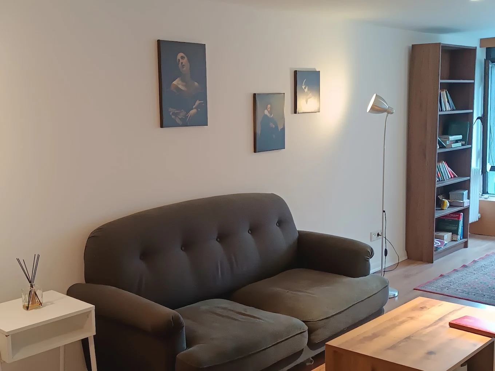

★★★★★
Beşiktaş terapi sürecinde ofisin huzurlu atmosferi ve profesyonel yaklaşım ilişkimizi çok daha sağlıklı yürütmemizi sağladı.
Mutsuzluk hâli, enerji kaybı, ilgisizlik veya umutsuzluk… Depresyon “tembellik” değildir; ruh hâlinin, düşünce ve davranışları etkileyen biyopsikososyal bir durumdur. Depresyon terapisi Beşiktaş hizmetinde Beşiktaş psikolog çerçevesinde BDT ve destekleyici tekniklerle, küçük ve ölçülebilir adımlar planlıyoruz. Psikolog randevu ile süreci bugün başlatmak, erteleme döngüsünü kırar.
Uyku ve iştah değişimleri, konsantrasyon zorluğu, suçluluk veya değersizlik düşünceleri, sosyal çekilme sık görülen işaretlerdir. İş ve ilişki işlevi bozulduğunda “bir süre bekleyeyim” demek, aktivasyon düşüklüğünü besleyebilir. Beşiktaş terapi sürecinde, günlük aktivasyon, düşünce kayıtları ve değer temelli hedefler gibi araçlarla ilerleme somutlaştırılır.
İstanbul psikolog arayan danışanlar için Beşiktaş merkez, düzenli takibi kolaylaştırır. Kaygı ile örtüşen belirtiler varsa anksiyete terapisi Beşiktaş içeriğiyle birlikte ele alınır; ikili tanıda plan bütünsel olur.
BDT çerçevesinde; otomatik düşüncelerin kaydı, kanıt arama, alternatif açıklama üretme ve davranış deneyleri kullanılır. Davranışsal aktivasyon ile “yapmaya başlama” yeniden öğrenilir; çünkü depresyon çoğu zaman eylemden önce hissedilen ağırlıktır. Seans dışı kısa ödevler, iyileşmenin “sadece terapi saatinde” yaşanmamasını sağlar.
Psikolog randevu Beşiktaş akışı şeffaftır: takvim, ücret bilgisi ve gizlilik ilk görüşmede netleşir. İlk terapi seansı yazısı, ilk oturum beklentilerini yönetmenize yardım eder.
Depresyon yalnız bireysel değildir; çift içi iletişimi de etkileyebilir. Partner desteği veya çatışma döngüleri varsa çift terapisi Beşiktaş seçeneği değerlendirilebilir. Amaç suçlamak değil, ortak dil geliştirmektir.
Beşiktaş psikolog etiği gereği içerikler gizli tutulur; süreç şeffaf, sınırlar nettir. Online terapi ile yüz yüze görüşmeyi dönüşümlü kullanmak mümkündür. Beşiktaş psikolog nasıl seçilir? rehberi uzman uyumu için kontrol listesi sunar.
Depresyon sık olarak “her şey anlamsız” düşüncesini besler; bu düşünce kısa vadede enerji düşüşünü haklı gösterir. BDT’de bu döngü bilinçli biçimde analiz edilir: düşünce kaydı, kanıt toplama ve alternatif açıklama üretme adımlarıyla düşünceler test edilir. Davranışsal aktivasyon ise küçük eylemleri—kısa yürüyüş, mesaj yazma, hobiye beş dakika—yeniden hayata sokmayı hedefler.
Depresyon terapisi Beşiktaş kapsamında ilerleme bazen haftalık madde listeleriyle ölçülür; böylece iyilik hâli soyut kalmaz. Belirtiler kaygı ile iç içe ise anksiyete terapisi Beşiktaş ile birlikte ele alınır. İstanbul psikolog seçenekleri geniş olsa da düzenli yüz yüze görüşme için Beşiktaş terapi lokasyonu sürdürülebilirlik sağlar.
Depresyon bazen “her şeyi anlatma” veya tam tersi “kimseye bir şey söylememe” uçlarına kaydırır. Terapide hangi bilgilerin paylaşılacağı ve hangi taleplerin makul olduğu konuşulur; böylece ilişkilerde tükenmişlik riski azaltılır. Partner desteği gerekiyorsa çift terapisi Beşiktaş ek katman olarak önerilebilir.
Enerji, aktivasyon, düşünce çarpıtmaları ve ilişki işlevini güçlendirmek; küçük sürdürülebilir adımlarla iyilik halini artırmak.
Duruma göre değişir; orta–ağır tablolarda psikiyatrik değerlendirme önemlidir. Terapi, ilaçlı veya ilaçsız süreçte psikolojik iyileşmeyi destekler.
Depresyon “bekleyince geçer” çoğu zaman doğru değildir. Erken müdahale, işlev kaybını ve ilişkisel yıpranmayı azaltır.

Gizlilik garantisi ve bilimsel temelli yaklaşım.
Hemen İletişime GeçOfis ve Beşiktaş merkez görselleri; profesyonel terapi ortamı ve ulaşım hissi yansıtır.


Google’da yorumlar
Beşiktaş Psikolog — Google İşletme Profili